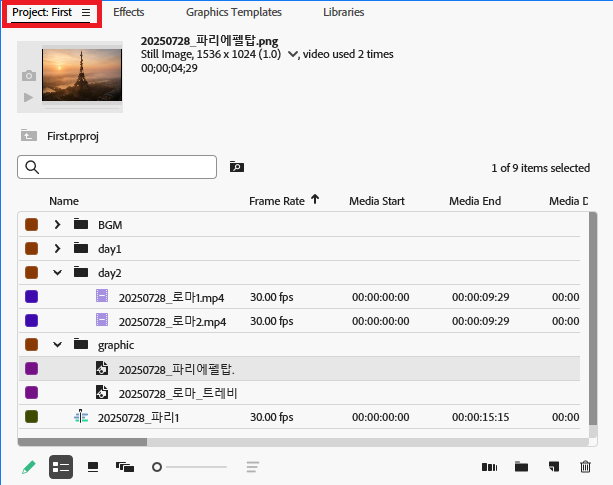
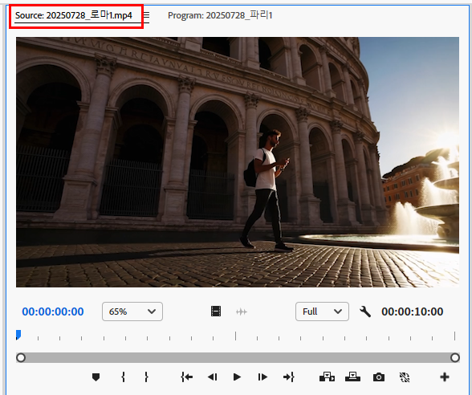
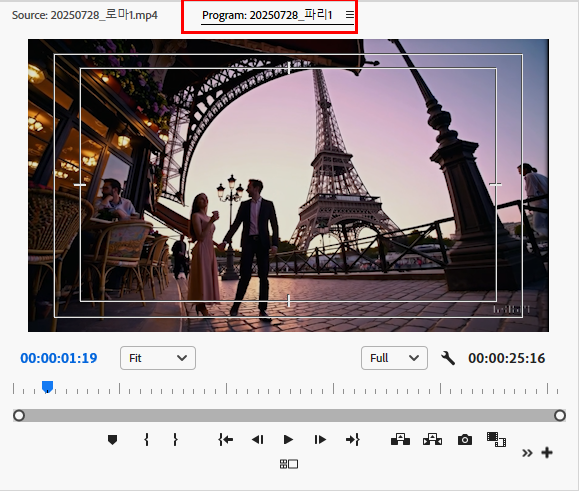
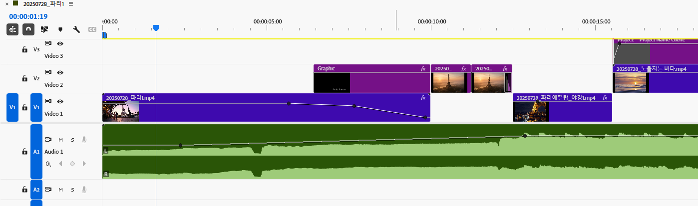
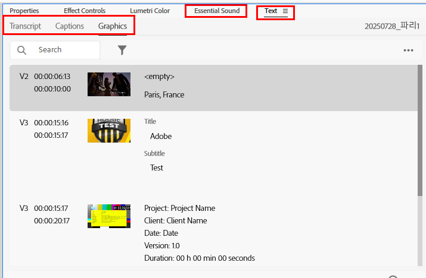

Adobe Premiere Pro 인터페이스 가이드
프리미어 프로의 복잡한 인터페이스를 실제 화면 예시와 함께 이해하고, 원하는 기능을 빠르게 찾도록 돕는 실무형 안내서입니다.
- 작업 영역별 UI 구조 이해
- 주요 패널 활용 실전 예제
- 편집 속도를 높이는 체크리스트
작업 영역 이해하기
프리미어 프로는 편집, 색 보정, 오디오 등 작업 목적에 따라 패널 배치를 최적화한 작업 영역(Workspace) 개념을 사용합니다. 상단 메뉴에서 원하는 작업 영역을 전환하면 필요한 패널 조합이 즉시 정리되어 작업 흐름을 빠르게 바꿀 수 있습니다.
작업 영역 이름을 마우스 오른쪽 버튼으로 클릭하면 사용자 지정 레이아웃을 저장하고, 필요 없는 패널은 끌어다 닫아 자신만의 최적 레이아웃을 구성할 수 있습니다. Adobe 작업 영역 가이드 →
핵심 패널 살펴보기
① 프로젝트 패널 (Project Panel) 소스 자산을 정리하는 총괄 창고
영상, 이미지, 오디오 등 편집에 필요한 모든 재료를 수집하고 분류하는 공간입니다. 폴더(Bin) 구조를 활용하면 촬영일이나 콘텐츠 유형별로 자산을 관리할 수 있어 후반 작업 효율이 크게 향상됩니다.

실전 예제: "유럽 여행 브이로그" 프로젝트 정리
프로젝트 패널 하단의 새 Bin 아이콘으로 Day 1 - 파리, Day 2 - 로마, BGM 폴더를 만든 뒤, 해당 소스를 각각의 Bin으로 드래그해 정리합니다. 촬영일별·소스별 폴더 구조를 선제적으로 잡아두면 검색과 교체 작업이 빨라집니다.
② 소스 모니터 (Source Monitor) 타임라인에 올리기 전 세밀한 손질
원본 클립을 재생하고 사용할 구간을 In/Out 포인트로 지정하는 곳입니다. 편집 전 미리보기를 통해 컷 길이를 다듬고, 타임라인에 삽입할 타입(비디오 전용/오디오 전용)도 결정할 수 있습니다.

실전 예제: "에펠탑 야경" 하이라이트 추출
소스 모니터에서 영상 클립을 열고 조명이 가장 화려한 순간의 시작에 I, 끝에 O를 입력해 구간을 설정합니다. 선택 영역을 타임라인으로 끌어다 놓으면 불필요한 부분 없이 원하는 구간만 삽입됩니다.
소스 모니터에서 클립 준비하기 →③ 프로그램 모니터 (Program Monitor) 편집 결과를 확인하며 배치 조정
현재 타임라인에 배치된 시퀀스를 확인하는 창입니다. 안전 여백, 오버레이, 비교 보기 등의 보조 도구를 활용하면 자막 위치나 컬러 매칭을 보다 정확하게 조정할 수 있습니다.

실전 예제: 자막 안전 영역 확인
프로그램 모니터에서 렌치 아이콘을 선택하고 안전 여백을 활성화한 뒤, 자막과 로고를 사각형 가이드 안쪽에 위치시킵니다. TV 송출 시 잘리는 문제를 사전에 방지할 수 있습니다.
프로그램 모니터 활용법 →④ 타임라인 패널 (Timeline Panel) 영상과 오디오를 조립하는 메인 작업대
모든 편집이 이루어지는 중심 공간으로, 비디오/오디오 트랙을 추가하거나 잠그고, 컷 편집·전환·자막·키프레임 등 다양한 작업을 진행합니다. 시퀀스 설정과 트랙 대상 지정(Target)을 함께 확인하세요.

실전 예제: 예고편 컷 편집 리듬 만들기
액션 장면을 1~2초 길이로 잘라 타임라인에 촘촘하게 배치하고, 주요 타격 순간에 효과음을 맞춰 넣습니다. 트랙별 격자 보기(Snap)를 켜고 작업하면 컷 사이의 간격을 일정하게 유지할 수 있습니다.
타임라인 패널 개요 →⑤ 기본 사운드 · 그래픽 패널 오디오와 타이틀을 빠르게 개선
오디오·그래픽을 쉽고 빠르게 보정할 수 있도록 설계된 프리셋 기반 패널입니다. 초보자도 몇 번의 클릭만으로 음량 균형을 맞추고, 타이틀 템플릿을 적용할 수 있어 편집 시간을 크게 단축합니다.

실전 예제: 인터뷰 목소리 선명하게 만들기
오디오 클립을 선택하고 기본 사운드 패널에서 유형을 대화(Dialogue)로 지정합니다. 선명도(Clarity) 항목의 자동 일치 버튼을 누르면 잡음을 줄이고 음성을 또렷하게 만들 수 있습니다.
기본 사운드 패널 활용 가이드 →빠르게 적응하는 워크플로우
01. 프로젝트 준비
- 미디어 브라우저로 원본을 불러오고, 프로젝트 패널에서 Bin을 만들어 촬영일·콘텐츠별로 정리합니다.
- 시퀀스 프리셋을 필요한 해상도/프레임으로 맞춘 후, 시퀀스 이름을 "YYMMDD_버전" 규칙으로 관리합니다.
02. 프라이머리 편집
- 소스 모니터에서 In/Out을 지정한 뒤 단축키 , 또는 .로 타임라인에 삽입합니다.
- 타임라인에서 Q/W로 리플 편집을 수행해 리듬을 만들고, 마커(M)로 중요한 지점을 기록합니다.
03. 마무리 & 출력
- 기본 사운드 패널로 음량을 균일하게 맞춘 뒤, 색 보정이 필요하면 Lumetri Color 패널을 추가합니다.
- 내보내기(Ctrl/Cmd + M)에서 사전 설정을 저장해 반복 작업 시간을 줄입니다.
출력 전 체크리스트
- 시퀀스 시작과 끝에 불필요한 검은 프레임이나 빈 트랙이 없는지 확인합니다.
- 프로그램 모니터에서 안전 여백과 색상 레벨(Scopes)을 확인해 TV 송출 기준을 맞춥니다.
- 필요한 그래픽·자막이 모든 버전에 반영되었는지 오버레이 기능으로 최종 확인합니다.
- 프로젝트 파일과 미디어를 Project Manager 기능으로 통합 저장해 다른 장비에서도 재편집할 수 있게 합니다.
실습으로 이어가기
실제 프로젝트 시나리오를 따라가며 Premiere Pro의 주요 기능을 손에 익혀 보려면 아래 실습 가이드를 확인해 보세요.